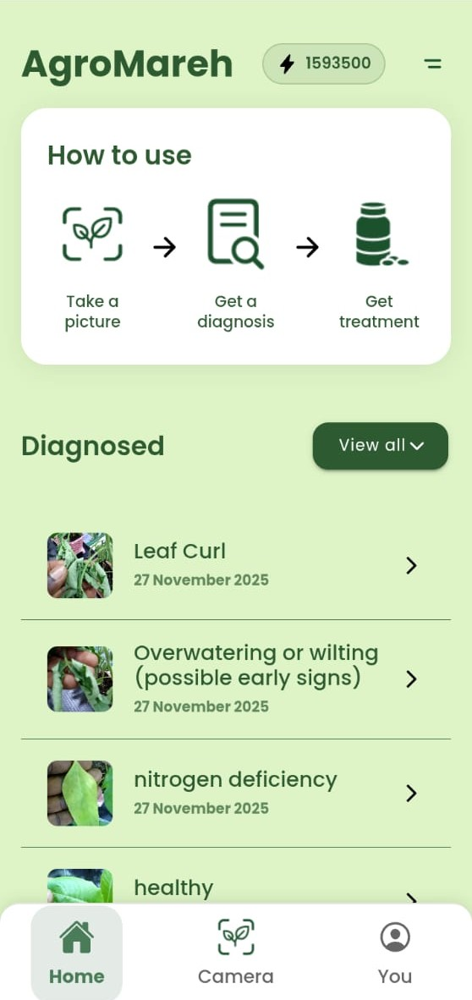
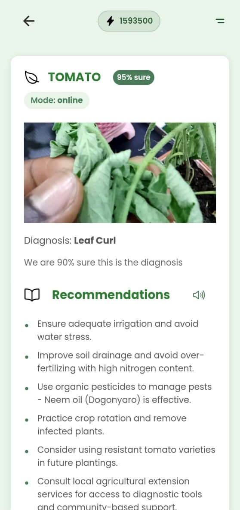
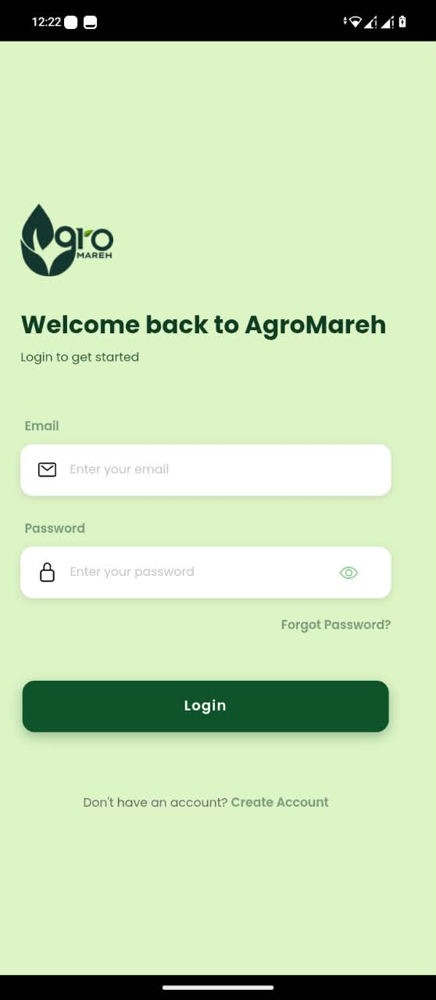

01
Detect
Use AI-assisted analysis of crop images across a growing range of crops and conditions.
Turn a field photo into a clear diagnosis, practical next steps and a growing record of crop health — all in one simple workflow.

Bring field observations, crop-health guidance and a useful diagnostic record into one simple experience for your team.
Use AI-assisted analysis of crop images across a growing range of crops and conditions.
Turn a diagnosis into clear, actionable next steps for crop-health management.
Keep diagnostic history close at hand so observations can be revisited over time.
Build a foundation for research, validation and better agricultural intelligence.
See the crop, understand the assessment and explore tailored recommendations — without losing the context of the field observation.


An Android experience connected to cloud infrastructure, API services and a database — designed for field work and institutional deployment.
AgroMareh is taking an institution-first route to scale. Research institutions, enterprise farms, agribusinesses and AgriTech organizations can deploy the platform where teams, field operations and data already come together.
Support crop-health research, field validation and structured observations.
Bring crop-health monitoring closer to everyday field operations.
Extend intelligence across production and agricultural networks.
Connect crop-health intelligence to wider technology systems.
A locally developed agricultural intelligence layer moving from research validation toward institutional deployment and wider market adoption.
Internal and field testing across the Middle Belt, with hundreds of observations reported by the team.
Android, API, database and AWS infrastructure provide a foundation for scalable deployments.
Registered Nigerian Utility Model Patent for the AI-powered crop health and agro-supply connectivity system.
FUEP collaboration supports research, farm testing, IP and commercialization guidance, and scaling.